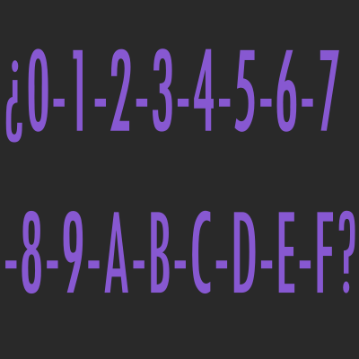

¿Qué es el Sistema Hexadecimal?

El sistema hexadecimal es un sistema de numeración posicional que tiene como base el 16. Esto quiere decir que tiene 16 símbolos válidos para formar números {0, 1, 2, 3, 4, 5, 6, 7, 8, 9, A, B, C, D, E, F}.
Es muy utilizado en la informática para facilitar la legibilidad de secuencias de bits largas, ya que un número hexadecimal es equivalente a 4 bits. El sistema también se utiliza en protocolos de internet (IP), en los códigos ASCII o en la descripción de los códigos de color en diseño web con el lenguaje de hojas de estilo CSS.